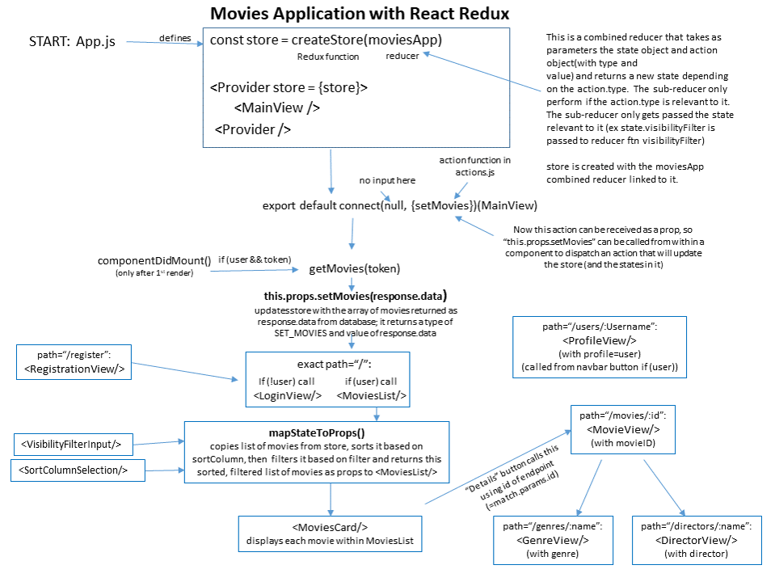
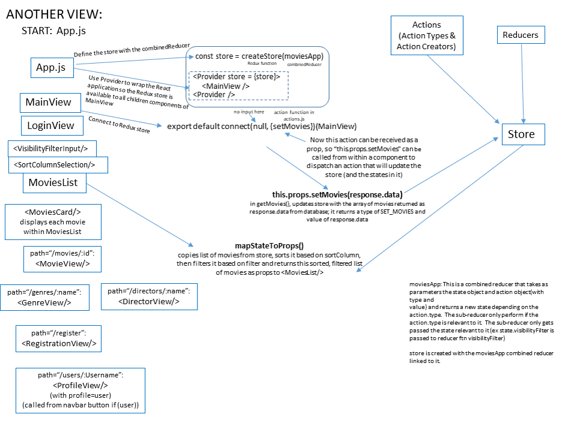

This project created the client-side single-page application of a movies-based project. It used a React library for the View aspect of the MVC architecture. The application allows a user to register as a new user or log in using JWT authentication and then access a MongoDB database through a RESTful API. The user views movies from the database and can obtain additional details about the director and genre of each movie.
This project was part of my student work for learning React and associated libraries and technologies (including React Router, create-react-app, Redux and React Bootstrap). It allowed me to practice new technologies as well as develop a single-page application to interact with the RESTful API that I created.
This project provides a single-page application in which a user can create an account and login to access a database of movie information as well as see a list of their favorite movies. The user can obtain details about the genre and director for each movie from the database.
This project used React, React Router, create-react-app, React Bootstrap, Sasa, and Axios. To create a solution for this project I researched how a single-page application works and studied how to use React and Redux for it. I looked at several examples using React to get a better understanding of its use of components for the user interface. I also examined create-react-app, React Bootstrap and Axios examples to ensure that I was using these boilerplates and libraries correctly in my project. I sketched out how the different components should interact and worked through the details for implementing this project.

This is the sketch that I put together to help me understand how the parts of React and React Redux should be working for this project.
This project provided me with plenty of challenges in the form of learning opportunities and allowed me
to gain a better understanding of React, React Router, and React Redux.
My overall challenge was in getting a strong understanding of how React works with states and props and
layered on top of that was a mental shift for using React Redux. I struggled to learn the workings
of React and Redux from the class instructions and gained a much stronger understanding by sketching out how
the different parts were supposed to interact with a lot of help from tutorials on the web. I then used plenty
of print statements (console.log() calls) to follow what was being passed to and from React components and to
ensure that what I intended to happen was actually doing so.
It took a while to understand the use of states and props and how action-types, action-creators, and reducers
tied it all to Redux.
I had expected this project to take 30 to 40 hours to complete. Hah! I reality I spent almost 16 hours fighting with my Windows OS to get create-react-app working before switching over to a MacOS. My challenges with learning React and React Redux added another 30 hours to this project resulting in about 80 hours of work to complete it.

This is another sketch that I put together to help me understand how the parts of React and Redux interact for this project.